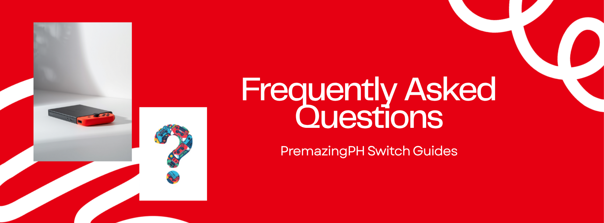

Common questions we get from PremazingPH customers. If your question isn't here, message us — we'll help.
A few possible causes:
If none of these explain it, message us — we can run a battery health check.
Short answer: yes, but only in Legit Mode (OFW), and only for non-Nintendo services like web browsing or YouTube apps.
Your PremazingPH setup blocks Nintendo's servers in Jailbreak Mode (JV/CFW), so eShop, online multiplayer, and Nintendo accounts won't work in CFW. That's by design — it protects you from bans.
If you want to use eShop or play Splatoon online, switch to Legit Mode using Hekate. Just don't update firmware online from there — always update manually so we can keep things compatible.
Same as a stock Switch. Go to System Settings → Users → Add User. New users work fine in both Legit Mode and Jailbreak Mode.
One thing to know: save data is per-user, so if you want to share progress with someone else, you'll need to back up and restore saves with JKSV or DBI. See our save management guide.
Most common causes:
Liquid spill: Power off immediately. Don't turn it back on to "test." Bring it to us as soon as possible — corrosion happens fast even after the liquid dries.
Drop: If it boots and works normally, you're probably fine. If you see screen damage, joy-con rail issues, or the modchip starts misbehaving (LED patterns), message us with photos.
Either way: don't try to open it yourself. You'll likely make the repair more expensive.
Fake SD cards are a real problem. They claim to be 256GB but actually only have 32GB of real storage — the rest loops back, corrupting your data.
Signs your card might be fake:
To check: download a tool called H2testw (Windows) or F3 (Mac/Linux). It writes test data and verifies. If real capacity is less than advertised, it's fake.
Stick with SanDisk from a reputable seller. We can recommend known-good cards in stock.
This means the game was built for a newer Switch firmware than what your modded setup currently supports.
Two options:
If you're not comfortable updating, message us first. We'd rather guide you through it than fix a brick later.
Use JKSV or Checkpoint in HBMenu. Both let you dump every save to your SD card in seconds.
For a more thorough backup, use DBI's MTP Responder to copy the entire 7: Saves folder to your PC. This is what we recommend before any major update or SD card swap.
See our Save Management guide for step-by-step instructions.
Because you're in Jailbreak Mode. Your PremazingPH setup blocks Nintendo servers in JV mode to keep you safe from bans.
If you want eShop access, boot into Legit Mode (OFW) from Hekate. eShop works normally there.
Heads up: if your Switch has been jailbroken for a while, your account may already be flagged. Even Legit Mode access isn't guaranteed for older modded consoles.
Yes. Joy-Con drift is caused by worn analog stick modules. Two fixes:
Calibrating in System Settings is a temporary band-aid. The hardware needs replacing eventually.
Don't see your question? Message us on Facebook, Shopee, or Lazada — we answer most messages within a few hours.